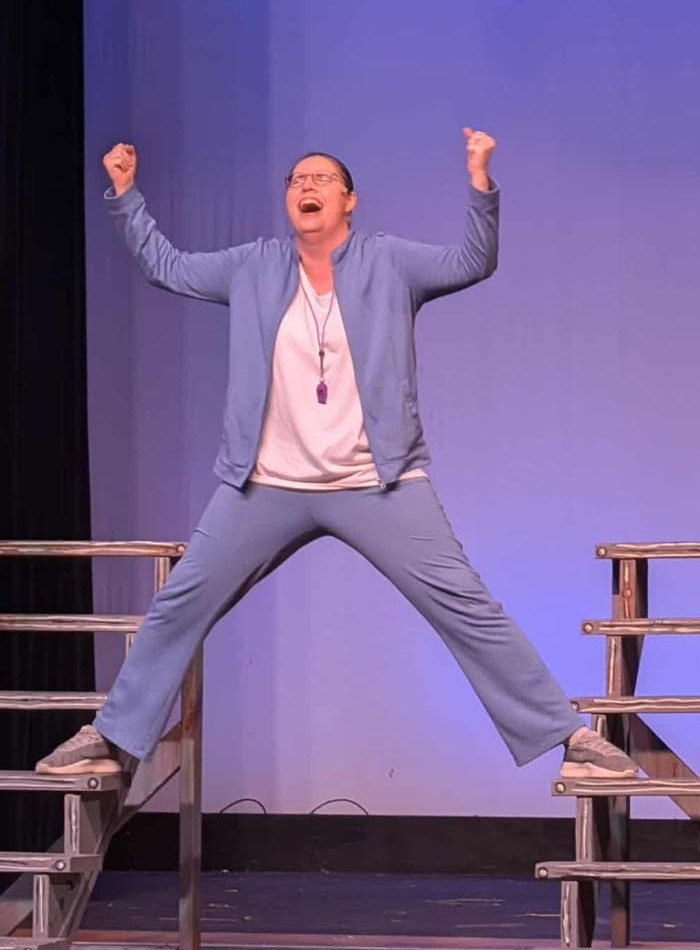

Live online improv classes for voice actors with Tori Sanford and Charles Ormsbee. Listen more deeply, trust your instincts and bring more spontaneity and life to every read.
Every audition is a scene with a partner you can't see.
Improv trains the same muscles the booth asks for. These are the building blocks we play with in every class.
01
Yes, and
Accept offers, build on ideas and go with the flow instead of shutting things down.
02
Listening
Stay present, truly hear your scene partner and respond to what's actually happening.
03
Emotions
Discover how the feeling behind your words can change an entire scene.
04
Responding
Trust your instincts, make genuine choices and react to the unexpected.
Find your class
Three steps from curious to confident.
Start with a single workshop, build your foundation, then take it into the booth. Every class is live on Zoom with Tori and Charles.
IMPROV 101Start here
Discovery
One 2-hour workshop · held monthly
$30
Curious but not sure where to start? Get a taste of improv through simple games and guided exercises. No pressure to be "good" at it. Just come ready to play and say "Yes, and!"
Ready to really learn the craft? Build the core skills of improv through games, exercises and scene work, and see how they help you as a voice actor and in everyday life. Spoiler: there are no mistakes in improv.
Improv tailored to the booth. Create characters fast, react to unseen scene partners, make strong choices with limited copy and take direction on the fly, with plenty of personal coaching. Week 8 is a live community showcase.
Next dates: [ADD DATES]. Can't make these times? Join the waitlist and we'll let you know first.

Tori, mid-scene
By the end, you'll be able to:
Listen and respond naturally in the moment
Use "Yes, and" to build scenes with a partner
Create characters, relationships and environments on the spot
Adapt when a scene takes an unexpected turn
Bring more spontaneity, connection and play to your voiceover
Meet your guides
Two voice actors. Two coasts. One stage.
Tori Sanford
Lover of improv & giver of laughs
W · Hawaii
Tori found improv more than ten years ago, when a friend talked her into a class at their community theatre. One class and she was hooked. She took every class on offer and went on to help start the theatre's first resident improv troupe.
Today she performs with the improv trio Play It Forward, has played with several other groups, and stays busy at the Aloha Theatre acting, making music and taking on all kinds of creative roles.
As a voice actor, she's felt firsthand how improv makes a performance more natural and alive. Over the past year she's fallen in love with teaching, helping people build confidence, trust their instincts and find the joy in making it up on the spot. So say "Yes, and!" and come play.
Charles has been playing with voices his whole life. He grew up mimicking characters and accents, spent eight years singing in a chorus and later performed with a metal band.
Today he's a versatile voice actor whose work includes Voices of Foster Pets, a long list of independent projects, and being the official voice of Prime Servers, Inc. He has also co-led weekly introductory improv workshops for voice actors.
A background in performance, communication and customer service gives him an energetic, people-first teaching style. He loves helping performers build the scene, step confidently into character and bring more life to their reads.
Not at all. Come ready to participate, take a few creative risks and have fun. 101 is the perfect place to start.
What time are classes?
Dates and times are listed with each class. All times are shown in Pacific Time, so check your own time zone when you sign up.
What do I need for class?
A quiet, distraction-free space, your camera on and some water nearby. Many exercises are interactive, so you'll be active the whole session.
What if a scene makes me uncomfortable?
Say our safe word: "Popcorn." We'll stop and start a new scene or take a new suggestion. You never have to explain why. No judgment, we just keep going. Sensitive or mature topics may come up occasionally, and the safe word is always there.
Can I get a refund or make up a missed class?
All registrations are final. Refunds, credits, transfers and make-up classes aren't available, so please plan to attend every session.
What if I'm running late?
Please arrive on time. Students more than five minutes late may not be admitted, since scenes depend on everyone being there from the start.